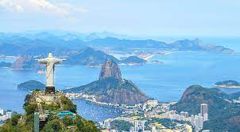
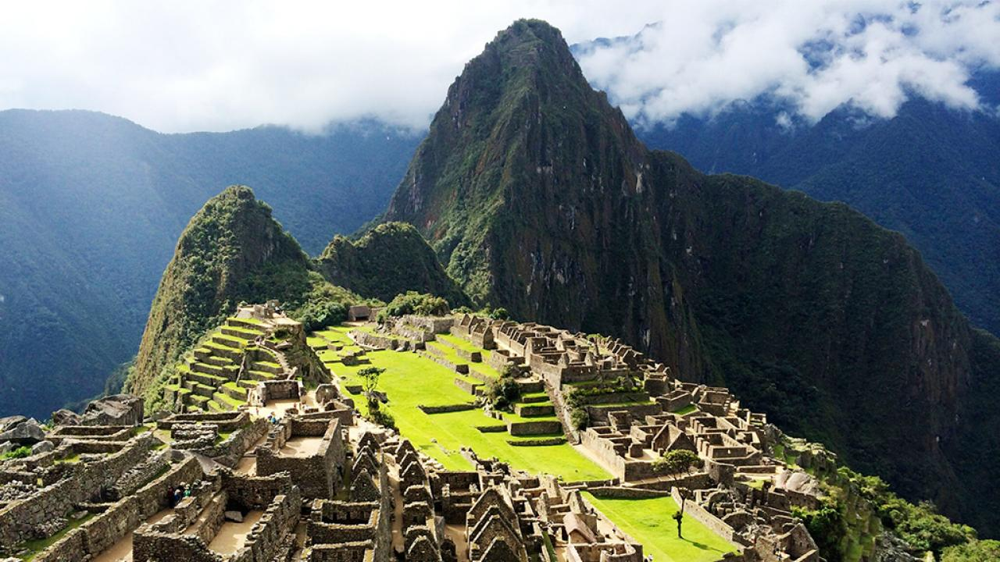

Alongside its extraordinary cultural heritage, Easter Island has a great wealth of natural riches with extinct volcanoes, lava tunnels and caves that were formed by volcanic eruption, and a rugged coastline of cliffs and hidden bays. The island is most famous for its nearly 1,000 extant monumental statues, called moai, which were created by the early Rapa Nui people. In 1995, UNESCO named Easter Island a World Heritage Site, with much of the island protected within Rapa Nui National Park. Easter Island is most famous for its mysterious monolithic stone statues. Known as moai, these statues are believed to have been carved by the Rapa Nui people sometime between 1250 and 1500, depicting the faces of their ancestors. Around half of the Moai are at the Rapa Raraku site but many that were originally there have been moved to other spots along the coastline and positioned facing inland. Guided tours take visitors around the island to see the ancient statues up-close.
2. Brazil

Brazil is the largest country in South America and the fifth-largest country in the world. Brazil is a synonym for lively rhythms of samba, colourful carnival, long stretches of sandy beaches and one of the most popular football centres. With its unique cuisine, rich culture, some of the most beautiful beaches in the world, breathtaking waterfalls, and adventure for everyone's liking, all you have to do is choose the perfect type of tourism for you and be amazed by the wonders of Brazil. Brazil is one of the largest country as well as one of the most diverse and fascinating nation in the world. The country has one of the most magnificent economies in the world. This country is filled with a rich dose of history, culture, religion and great sports as well. With intriguing people, plants and animals this country is surrounded by a fantastic Amazon rain forest and beautiful tropical oceans. Brazil is one of the most fascinating tourist destinations for travelers. The salty sea lapping against the strips of sandy shore as far as the eye can see, while the wind whispers through the fronds of the palm trees is absolutely one of the best reasons to visit Brazil. With seasonal rainfall areas providing light relief from the tropical heat, the balmy, warm evenings and super sunny beach days, every day, means that you are just about guaranteed to have an outdoor adventure every day! Go hit the place and feel the tropical aura.
3. Machu Picchu

The consensus opinion is that Machu Picchu was built as an estate for the great Inca Pachacuti. It is also considered a pilgrimage site that Incas would take to pay respects to the great Inca leader. The pilgrimage taken to the site is the route now called the Inca Trail. Tucked away in the rocky countryside northwest of Cuzco, Peru, Machu Picchu is believed to have been a royal estate or sacred religious site for Inca leaders, whose civilization was virtually wiped out by Spanish invaders in the 16th century. The consensus opinion is that Machu Picchu was built as an estate for the great Inca Pachacuti. It is also considered a pilgrimage site that Incas would take to pay respects to the great Inca leader. The pilgrimage taken to the site is the route now called the Inca Trail. At a dizzying 2,430 meters above sea-level, the view form Machu Picchu on a clear day is breath taking. The famous ruins are surrounded by towering peaks (apus, which means “sacred peaks” in Quechua) and have views of the surrounding valley.